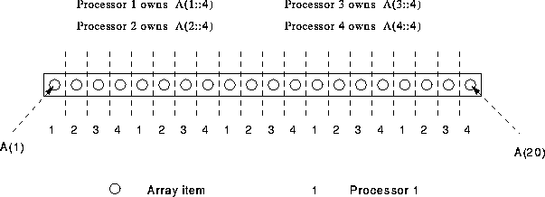
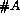
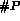

Deal out elements of an array to processors in a round robin fashion
PROGRAM Round_Robin
REAL, DIMENSION(20) :: A
!HPF$ PROCESSORS, DIMENSION(4) :: P
!HPF$ DISTRIBUTE (CYCLIC) ONTO P :: A
....

If an array, A has  elements and is mapped onto  processors each processor gets (a maximum) total of separate elements.
In this case each processor gets five elements.
For more information, click here